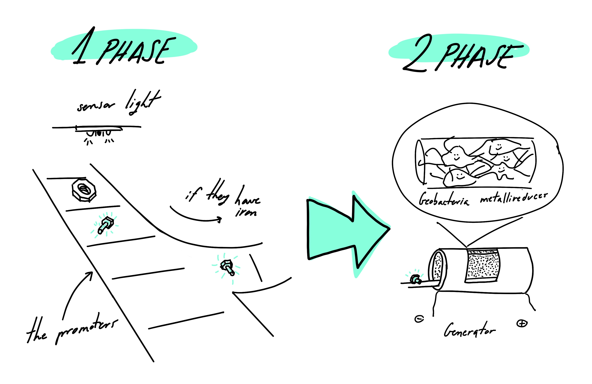

Submissions
Hypothetical Designed Organism
An electricity generator from metal recycling.
Starting with an iron selection system up to energy transformation. This would be the recycling method along with the creation of electricity.
For the selection of iron among the materials, we would use a promoter, BBa_I765000, which reacts to iron to indicate the components. This promoter reacts with a second one, BBa_Z0251, where it causes it to light up and with a light sensor can drive the material towards energy transformation.
The next phase combines a sequence of bacteria, Geobacter metallireducens, arranged in sheets and connected by microbial nanowires.
They are responsible for transforming iron into electricity, during their breathing process.

Synthetic Systems Powered by Biological Molecular Motors _Gadiel Saper and Henry Hess
Biomolecular motors are motors that are responsible for mechanical movement within organisms, and through the study are intended to be applied at the nanoscale for typically medical applications.
Within these motors we can find linear or rotary motors, depending on this they use different members. Normally the linear motors kinesin-1, myosin II, and sometimes dynein are used. The kinesin and dynein motors are found in eukaryotic cells and move through tubular structures. Whereas myosin is found in muscle contractions and converts ATP to mechanical work as kinesis. They can be applied as actuators, sensors or computation. While rotary motors include F1-ATPase and the flagellar motor, and are often used as nanoscale generators, self-powered actuators, and microswimmers. Artificial and hybrid engines are used to increase the applications and performance of these engines.
There are different limitations on these engines, in terms of lifetime, scale-up, and cost. Thanks to the application of engineering, the lifetime can be increased, but not yet sufficiently. The same goes for scale-up changes, where if the focus is on the manufacturing, packaging, and storage of active proteins, this one will increase and also the costs will drived down.